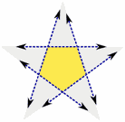
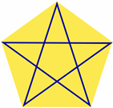
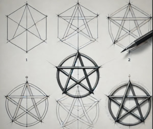
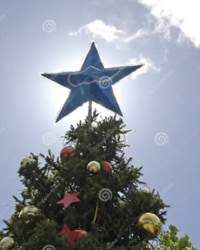

The Pentagram

The Pentagram (or Pentangle) looks like a 5-pointed star.
You may think it has something to do with witchcraft, but in fact it is more famous as a magical symbol and is also a holy symbol in many religions.
In fact, this simple figure is quite amazing.
| Inside a Pentagram is a Pentagon |  |

You can make a pentagram by first drawing a pentagon, then extending the edges.

Or by drawing lines from corner to corner inside a pentagon.
Star Polygon
In fact a Pentagram is a special type of polygon called a "star polygon".

Ratios
The regular pentagram (a perfectly even 5-point star) has a special number hidden inside called the Golden Ratio, which equals approximately 1.618:
- a/b = 1.618...
- b/c = 1.618...
- c/d = 1.618...
When I drew this, I measured the 4 lengths and I got a=216, b=133, c=82, d=51. So let us check to see what the ratios are:
- 216/133 = 1.624...
- 133/82 = 1.622...
- 82/51 = 1.608...
If I had drawn and measured more accurately, I would have been even closer!
Why not have a go yourself:
- Draw a regular pentagram
- Measure the lengths
- Calculate the ratios
Try using a ruler or a drawing app to check the ratios yourself. Do your measurements match the Golden Ratio?
The pentagram is also great fun to draw ... or make!


Irregular PentagramSo far we have explored the regular pentagram (all sides equal and all angles equal), but irregular pentagrams also exist! |
 |